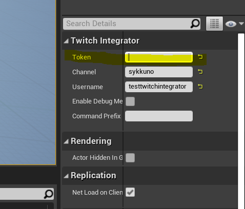
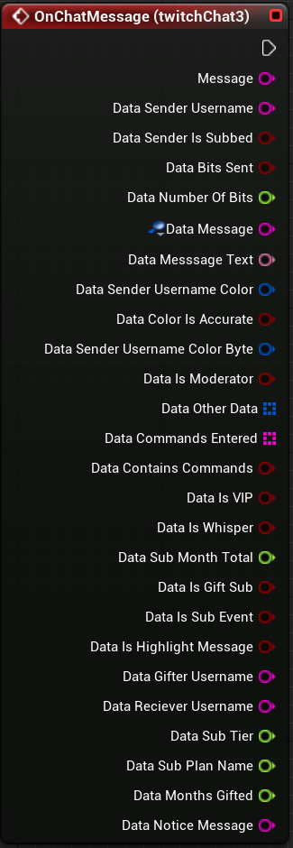

- Register your application at https://dev.twitch.tv/console/apps/create
- Once you have your app setup put not your clientId and setup your redirect to https://twitchtokengenerator.com
- Go to the token generator website and you'll be able to generate your token
- On the website scroll to the bottom and select the scopes chat:read, chat:edit, whispers:read and whispers:edit
- On the website scroll to the bottom and select the scopes chat:read, chat:edit, whispers:read and whispers:edit
- Take the token generated token and put in the token field of your twitch actor or twitch actor component 
Twitch Integrator first time setup

Steps to get your token

Messaging node
This node is used to receive all the chat messages from the chat you're connected to. It's the base node of this plugin. The other nodes are useful but not required. Most the information from the other nodes is present in this one
-
Message: The raw message from twitch. Every other information of this node is just information parsed from this string, it will look something like this:
@badge-info=subscriber/97;badges=moderator/1,subscriber/3096;color=#B22222;display-name={username_here};emotes=305032088:66-70/305032057:12-17/emotesv2_3f7c5fc679134c35a2c4265f0435d143:43-48;first-msg=0;flags=;id={id};mod=1;room-id=26610234;subscriber=1;tmi-sent-ts=1644085188856;turbo=0;user-id={user-id};user-type=mod :{username}!{username}@{username}.tmi.twitch.tv PRIVMSG #{channel} : {Message that appears in chat} - Data Sender Username: The username of the person who sent the message
- Data Sender Is Subbed: If the sender is subcribed or not
- Data bits sent: If the message was sent with bits or not
- Data number of bits sent: If the message was sent with bits, this is the number of bits sent
- Data message: The message that is displaye in twitch chat. If it contains an emote, it will the keyboard shortcut for said emote
- Data message Text: The message that is displaye in twitch chat but in Text type for different uses. If it contains an emote, it will the keyboard shortcut for said emote
- Data sender username color: The color of the username of the person who sent the message. This value is only true to the original twitch chat if the person manually changed it. Otherwise it's a random rgb value
- Data color is accurate: if the color of the username is accurate or not. This value is only true to the original twitch chat if the person manually changed it. Otherwise it's a random rgb value
- Data sender username Color byte: The color of the username of the person who sent the message. This value is only true to the original twitch chat if the person manually changed it. Otherwise it's a random rgb value. But this time it's a FColor
- Data other Data: There are some other fields that aren't name as outright information on the node. If you whish to use them, then they are here
- Data commands entered: If the message was sent with commands, these are the commands that were sent
- Data Contains commands: If the message was sent with commands, this is true
- Data Is VIP : If the sender is a VIP or not
- Data is Whisper: If the message was sent in whisper or not
- Data Sub month total: If the sender is a sub, this is the number of months the sub has been active for
- Data is Gift sub: if the message is from a sub gift or not
- Data is sub event: If the message is related to somone renewing a sub, receiving a sub or subscribing to the channel
- Data is highlight message: if the message is a highlight from points being redeemed on the channel
- Data gifter username: If the message is a sub gift, this is the username of the person who gifted the sub
- Data receiver username: If the message is a sub gift, this is the username of the person who received the sub
- Data sub tier: if the sender of the message is subbed this is the tier they are subbed at
- Data sub plan name: The number of the plan the subbed is at
- Data months gifted: how many months the user has gifted
- Data notice message: if the message is a notice message. (These message are a kind of error message twitch sends when there is an error with the connection to the chat)